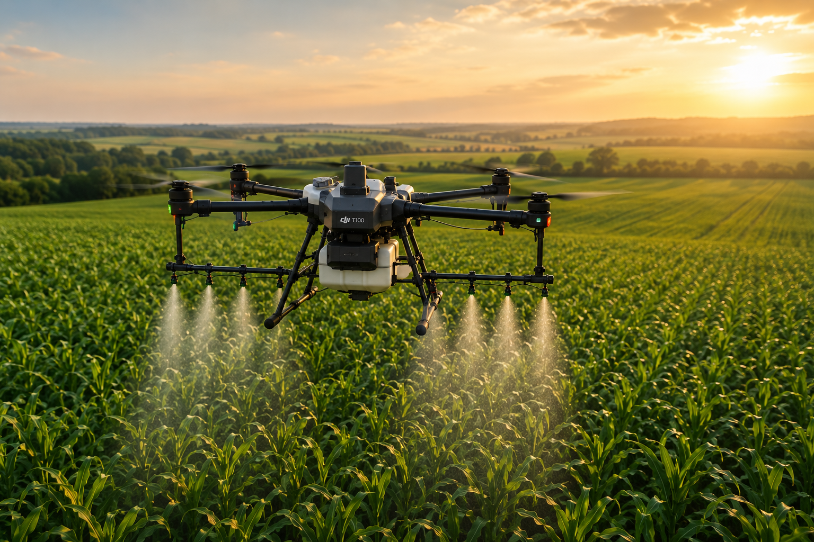
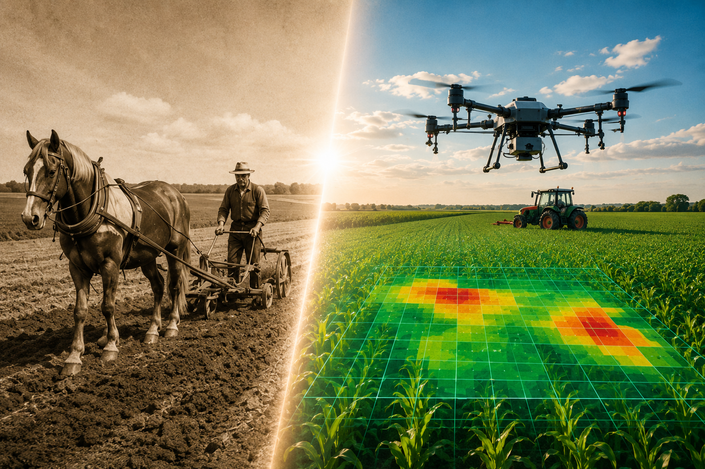

Nincs taposási kár
A drón nem hagy keréknyomot, ezért nem töri és nem tapossa a növényállományt.
ORSZÁGOS LEFEDETTSÉG • MODERN NÖVÉNYVÉDELEM
Drónos permetezés az okszerű gazdálkodásért. Centiméteres pontosságú kijuttatás, 0% taposási kár, akár 90%-kal alacsonyabb vízfelhasználás és a precíz kijuttatásnak köszönhetően jelentősen csökkenthető növényvédőszer-felhasználás.
Miért éri meg drónos permetezést választani?
A drónos permetezés nem csak látványos technológia. Valódi gazdasági előnye van: gyorsabb beavatkozás, pontosabb kijuttatás és kevesebb fölösleges terhelés a földnek.
A drón nem hagy keréknyomot, ezért nem töri és nem tapossa a növényállományt.
Amikor rövid az időablak, a gyors munkavégzés sokat számít. A drón rugalmasan bevethető.
A célzott permetezés segíthet abban, hogy a szer oda kerüljön, ahol valóban szükség van rá.
Belvizes, meredekebb vagy géppel nehezen járható területeken is komoly előnyt jelenthet.

Környezet és méhek védelme
Számunkra a drónos permetezés nem arról szól, hogy minél gyorsabban le legyen tudva. A cél, hogy a növényvédelem hatékony legyen, miközben odafigyelünk a környezetre, a hasznos élő szervezetekre és különösen a méhekre.
Figyelünk az időzítésre, a körülményekre és a felelős kijuttatásra.
Nem a túlhasználat a cél, hanem a pontos és szükséges növényvédelem.
A precíz kijuttatás csökkentheti a felesleges pazarlást.
Úgy dolgozunk, hogy a gazda eredményt kapjon, de közben a környezet se legyen feleslegesen terhelve. Ez hosszú távon nemcsak etikusabb, hanem okosabb gazdálkodás is.
Ajánlatot kérekDJI Mavic 3 Multispectral
Nem csak permetezünk. A DJI Mavic 3 Multispectral segítségével felmérjük a területet és olyan problémákat is észrevehetünk, amelyek szabad szemmel még nem láthatók.
A táblák gyors átvizsgálása, gyenge foltok és fejlődési eltérések felismerése.
Vegetációs indexek készítése a növényállomány állapotának vizsgálatához.
Tápanyaghiány, vadkár, belvíz és egyéb eltérések korai felismerése.
A felmérés alapján célzottabban lehet megtervezni a kezeléseket.
A tábla aktuális állapotának rögzítése és összehasonlítása.
Nem csak képeket adunk, hanem segítünk azok értelmezésében is.
Mavic 3 Multispectral
Problémák azonosítása
Drónos permetezés
Először felmérjük a területet, majd az eredmények alapján célzottabban lehet dönteni a növényvédelemről.
Felmérést kérek
A mi történetünk
A mezőgazdasági történetünk nem modern gépekkel kezdődött. A családi gazdaság régen még lóval, kézi munkával és rengeteg kitartással dolgozott a földeken.
Az idők változtak, a technológia fejlődött, de a hozzáállás ugyanaz maradt: becsületes munka, földszeretet, pontosság és felelősség.
Ma már drónos permetezéssel dolgozunk, mert hisszük, hogy a magyar mezőgazdaság akkor tud előre menni, ha a hagyományt összekötjük a modern technológiával.
Hogyan dolgozunk?
Felhív minket vagy ír egy üzenetet.
Megnézzük a területet és a kezelési célt.
Precíz kijuttatás modern technológiával.
Visszajelzést kérünk, mert hosszú távú partnereket keresünk.
Kapcsolat
Kérjen ajánlatot drónos permetezésre országos lefedettséggel.